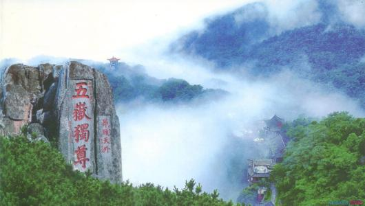
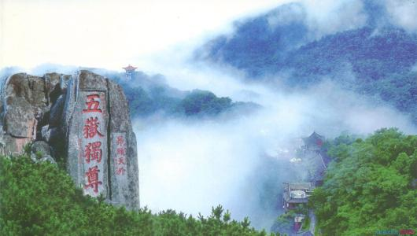
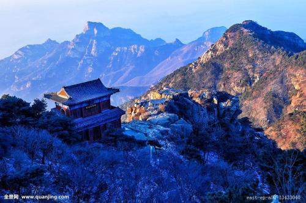
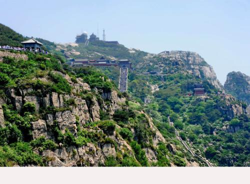
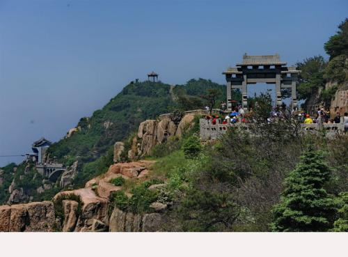
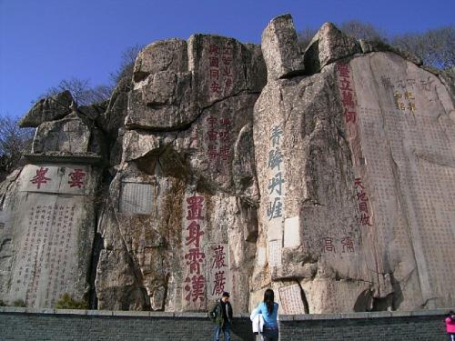
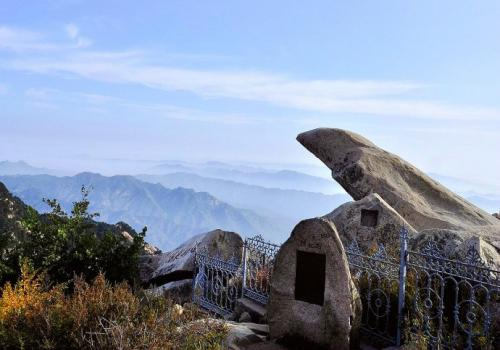
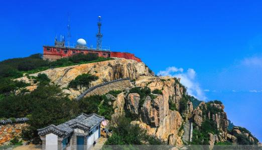

东岳泰山简介
泰山又名岱山、岱宗、岱岳、东岳、泰岳，位于山东省中部，隶属于泰安市，绵亘于泰安、济南、淄博三市之间，总面积24200公顷。主峰玉皇顶海拔1545米，气势雄伟磅礴，有“五岳之首”、“五岳之长”、五岳之尊、“天下第一山”之称。是世界自然与文化遗产，世界地质公园，国家AAAAA级旅游景区，国家级风景名胜区，全国重点文物保护单位，全国文明风景旅游区。 泰山被古人视为“直通帝座”的天堂，成为百姓崇拜，帝王告祭的神山，有“泰山安，四海皆安”的说法。自秦始皇开始到清代，先后有13代帝王引次亲登泰山封禅或祭祀，另外有24代帝王遣官祭祀72次。 [2-3] 泰山宏大的山体上留下了20余处古建筑群，2200余处碑碣石刻。道教、佛教视泰山为“仙山佛国”，神化泰山，在泰山建造了大量宫观寺庙。 [4] 泰山是中华民族的象征，是东方文化的缩影，是“天人合一”思想的寄托之地，是中华民族精神的家园。
风景展示
 


  
  
旅行攻略
泰山位于山东省泰安市境内。
机场 泰安市内没有机场。距离最近的是济南遥墙国际机场，相距约110公里，距离太远乘坐也不方便，在此就不涉及了。
火车站 泰山目前有两个火车站，泰山火车站和泰安高铁站。 泰山火车站是老火车站，是泰山旅游交通的中心枢纽，交通比较方便。地址：泰安市泰山区财源大街。 泰安高铁站即京沪高铁泰安站，停靠所有动车（D）和高铁（G）。地址：泰安市岱岳区泮河大街大河路。
市内交通 以公交车和出租车为主。山门出租车比较少，可能与泰山游客比较少有关系，但是公交系统发达。泰安市路面交通状况非常好，虽然公交车看上去站比较多，但实际坐很快就到了。所以，公交车是到达泰安市后的代步首选。
景区内有如下交通可选：
天外村环保车：从天外村到中天门；
中天门索道：从中天门到南天门；
半山游旅游车：从黄石崖-》彩石溪-》桃花峪；